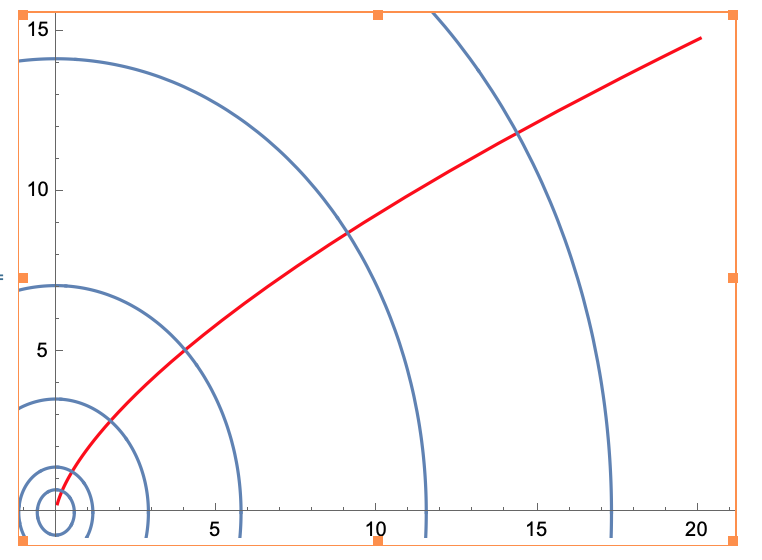
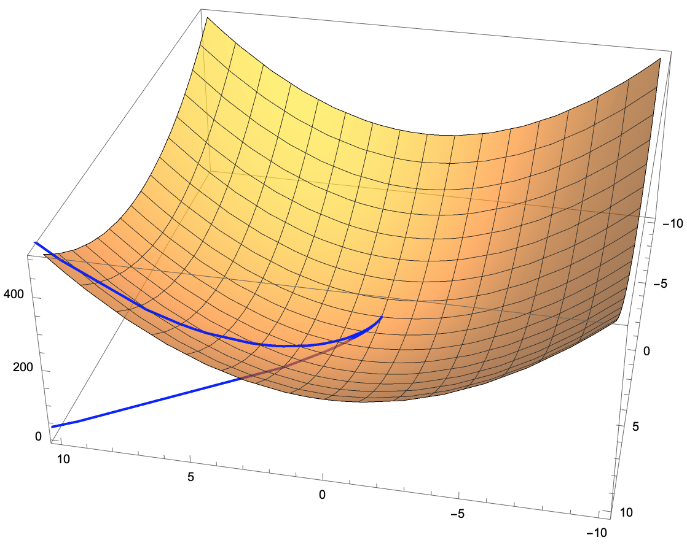

Sea $U\ne \emptyset$ un abierto de $\mathbb{R}^n$ y $f:U\to \mathbb{R}$.
En la sección 6, dado un vector $v\in \mathbb{R}^n$, definimos la derivada direccional de $f$ en el punto \(p\) en la dirección de \(v\) como el límite $$ \lim_{h \to 0} \frac{f(p+hv)-f(p)}{h} $$ el cual se denota como $\partial_vf(p)$.
Sea $U\ne \emptyset$ un subconjunto abierto de $\mathbb{R}^n$ y $f:U\to \mathbb{R}$ una función diferenciable en $p_0\in U$.
Para todo \(u=(u_1,\dots, u_n)\in \mathbb{R}^n\), se tiene que \[ \partial_uf(p_0)= \nabla_{p_0}f\cdot u \] es decir \[ \partial_uf(p_0)=\sum_{i=1}^n \partial_{x_i}f(p_0)u_i. \]
Al ser \(U\) abierto existe $r>0$ tal que $B_r(p_0)\subseteq U$. Nota que para todo vector $w$ con $\|w\|< r$, $p_0+w \in U$. Fija $u\ne 0$. Nota que si \(h\) es pequeño \(p_0+ hu \in U\) y por lo tanto \(f(p_0+hu)\) tiene sentido.
Ya que \(f\) es diferenciable en \(p_0\) las parciales existen y tomando el gradiente de \(f\) en \(p_0\) se tiene que: \begin{equation}\label{Eqn:Aux1DerDireccional} \lim_{\|w\|\to 0}\frac{|f(p_0+w)-f(p_0)-\langle \nabla_{p_0}f, w\rangle|}{\|w\|}=0 \end{equation}
Tomando \(w=tu\) en la ecuación \eqref{Eqn:Aux1DerDireccional} se obtiene \begin{equation}\label{Eqn:Aux2DerDireccional} \lim_{t\to 0}\frac{|f(p_0+tu)-f(p_0)-\langle \nabla_{p_0}f, tu\rangle|}{\|tu\|}=0 \end{equation} ya que \(\|tu\|=|t|\|u\|\) podemos reescribir la ecuación \eqref{Eqn:Aux2DerDireccional} como \begin{eqnarray*} & \lim_{t\to 0} & \left| \frac{f(p_0+tu)-f(p_0)-\nabla_{p_0}f\cdot tu}{t\|u\|} \right|=0 \\ \Rightarrow & \lim_{t\to 0} & \left| \frac{f(p_0+tu)-f(p_0)}{t\|u\|}-\frac{t \nabla_{p_0}f\cdot u}{t\|u\|} \right|=0 \\ \Rightarrow & \lim_{t\to 0} & \left| \frac{f(p_0+tu)-f(p_0)}{t\|u\|}-\frac{\nabla_{p_0}f\cdot u}{\|u\|} \right|=0 \end{eqnarray*} y multiplicando por \(\|u\|\) se obtiene \begin{equation}\label{Eqn:Aux3DerDireccional} \lim_{t\to 0} \left| \frac{f(p_0+tu)-f(p_0)}{t}-\nabla_{p_0}f\cdot u \right|=0 \end{equation} lo cual se puede escribir como \[ \lim_{t\to 0} \frac{f(p_0+tu)-f(p_0)}{t}=\nabla_{p_0}f\cdot u \] es decir, \(\partial_uf(p_0)=\nabla_{p_0}f\cdot u\).
Sea \(U\subseteq \mathbb{R}^n\) un abierto y \(f:U\to \mathbb{R}\). Si \(f\) es diferenciable en \(p_0\) y \(\nabla_{p_0}f\ne 0\) entonces \(f\) crece más rápidamente en la dirección de \(\frac{1}{\|\nabla_{p_0}f\|}\nabla_{p_0}f\).
Es decir \[ \max_{\|u\|=1}\{ \partial_u f(p_0) \}=\partial_{u^*}f(p_0) \] donde \(u^*=\frac{1}{\|\nabla_{p_0}f\|}\nabla_{p_0}f\).
De manera similar también se tiene que \[ \min_{\|u\|=1}\{ \partial_u f(p_0) \}=\partial_{u_*}f(p_0) \] donde \(u_*=-\frac{1}{\|\nabla_{p_0}f\|}\nabla_{p_0}f\).
Por la Proposición 9.2 tenemos \[ \partial_uf(p_0)= \nabla_{p_0}f \cdot u \] por Cauchy-Schwartz \[ \nabla_{p_0}f, u = \|\nabla_{p_0}f\| \|u\| \cos(\alpha)=\|\nabla_{p_0}f\| \cos(\alpha) \] donde \(\alpha\) es el ángulo entre \(\nabla_{p_0}f\) y \(u\). Ya que \(|\cos(t)|\leq 1\) para todo \(t\) vemos que el máximo se alcanza cuando \(\cos(\alpha)=1\), es decir cuando \(\alpha =0\). Por lo tanto el máximo se alcanza cuando \(u\) apunta en la misma dirección de \(\nabla_{p_0}f\) y ya que \(\|u\|=1\) concluimos que el máximos se alcanza en \(u^*=\frac{1}{\|\nabla_{p_0}f\|}\nabla_{p_0}f\).
Para el mínimo tenemos que se alcanza cuando \(\cos(\alpha)=-1\), es decir cuando \(\alpha=\pi\). Por lo tanto se alcanza cuando \(u\) y \(\nabla_{p_0}f\) tiene direcciones opuestas, es decir el mínimo se alcanza en \(u_*=-\frac{1}{\|\nabla_{p_0}f\|}\nabla_{p_0}f\)
Sea \(U\subseteq \mathbb{R}^n\) un abierto y \(f:U\to \mathbb{R}\) una función diferenciable en \(U\). Si \(p_0, p_1 \in U\) y el segmento que une \(p_0\) y \(p_1\) está contenido en \(U\), entonces existe un punto \(c\) en este segmento tal que \[ f(p_1)-f(p_0)= \nabla_{c}f \cdot (p_1-p_0). \]
Definamos la función \(g:[0,1]\to \mathbb{R}\) dada por \(g(t)=f(p_0+t(p_1-p_0))\). Notamos que \begin{eqnarray*} g'(t)&=& \lim_{h\to 0} \frac{g(t+h)-g(t)}{u} \\ &= & \lim_{h\to 0} \frac{f(p_0+(t+h)(p_1-p_0))-f(p_0+t(p_1-p_0))}{h} \\ &=& \lim_{h\to 0} \frac{f(p_0+t(p_1-p_0)+h(p_1-p_0))-f(p_0+t(p_1-p_0))}{h} \end{eqnarray*} tomando \(p_2=p_0+t(p_1-p_0)\) podemos reescribir la expresión anterior como \begin{eqnarray*} \lim_{h\to 0} \frac{f(p_2+h(p_1-p_0))-f(p_2)}{h} &=& \partial_{p_1-p_0}f(p_2) \\ &=& \nabla_{p_2}f \cdot (p_1-p_0). \end{eqnarray*} por lo tanto \(g'(t)=\nabla_{p_0+t(p_1-p_0)}f \cdot (p_1-p_0)\).
Por otro lado, por el teorema del valor medio para funciones de una variable, existe un \(t^*\in (0,1)\) tal que \[ g(1)-g(0)=g'(t^*)(1-0)=g(t^*). \] lo cual se puede escribir como \[ f(p_1)-f(p_0)= g'(t^*)=\nabla_{p_0+t^*(p_1-p_0)}f \cdot (p_1-p_0). \] Definiendo \(c=p_0+t^*(p_1-p_0)\) se obtiene el resultado deseado.
Sea \(U\subseteq \mathbb{R}^n\) un abierto, \(f:U\to \mathbb{R}\) una función diferenciable en \(U\) y \(\gamma :(a,b) \to U\) una curva diferenciable en \((a,b)\). Entonces la función compuesta \(f\circ \gamma:\mathbb{R}\to \mathbb{R}\) es diferenciable y su derivada se puede calcular como \[ (f\circ \gamma)'(t_0)= \nabla_{\gamma(t_0)}f \cdot \gamma'(t_0). \] para todo \(t_0\in (a,b)\).
Para simplificar la prueba vamos a suponer que existe una vecindad perforada de \(t_0\) en donde para \(t\) en dicha vecindad se cumple \(\gamma(t)\ne \gamma(t_0)\). El caso más general se verá en la sección de la regla de la cadena para funciones vectoriales.
Por definición de la derivada para curvas tenemos \[ \lim_{t\to t_0} \left\|\frac{\gamma(t)-\gamma(t_0)}{t-t_0} - \gamma'(t_0)\right\|=0. \] Por la otra desigualdad del triángulo se tiene que \[ \left| \left\| \frac{\gamma(t)-\gamma(t_0)}{t-t_0} \right\|- \|\gamma'(t_0)\| \right| \leq \left\|\frac{\gamma(t)-\gamma(t_0)}{t-t_0} - \gamma'(t_0)\right\| \] asi que del límite anterior y de la ley del sandwich para límites se obtiene que \begin{equation}\label{Eqn:Aux4DerDir} \lim_{t\to t_0} \frac{\left\|\gamma(t)-\gamma(t_0)\right\|}{|t-t_0|} =\|\gamma'(t_0)\|. \end{equation}
Por ser \(f\) diferenciable en \(U\) para todo \(p_0\in U\) \[ \lim_{p\to p_0}\frac{|f(p)-f(p_0)- \nabla_{p_0}f\cdot (p-p_0)|}{\|p-p_0\|}=0 \] Tomamos \(p_0=\gamma(t_0)\) y \(p=\gamma(t)\) podemos reescribir la ecuación anterior como \begin{equation}\label{Eqn:Aux5DerDir} \lim_{t\to t_0}\left| \frac{f(\gamma(t))-f(\gamma(t_0))- \nabla_{\gamma(t_0)}f\cdot (\gamma(t)-\gamma(t_0))}{\|\gamma(t)-\gamma(t_0)\|}\right|=0. \end{equation}
Multiplicando los límites \eqref{Eqn:Aux4DerDir} y \eqref{Eqn:Aux5DerDir} se obtiene \begin{eqnarray*} & \lim_{t\to t_0} & \frac{\left\|\gamma(t)-\gamma(t_0)\right\|}{|t-t_0|} \left| \frac{f(\gamma(t))-f(\gamma(t_0))- \nabla_{\gamma(t_0)}f\cdot (\gamma(t)-\gamma(t_0))}{\|\gamma(t)-\gamma(t_0)\|}\right| \\ &=& \|\gamma'(t_0)\|\cdot 0\\ &=& 0 \end{eqnarray*} Cancelando \(\|\gamma(t)-\gamma(t_0)\|\) (pues pedimos que \(\gamma(t)\neq \gamma(t_0)\)) en el límite anterior llegamos a: \[ \lim_{t\to t_0} \left| \frac{f(\gamma(t))-f(\gamma(t_0))}{t-t_0}- \nabla_{\gamma(t_0)}f\cdot \left(\frac{\gamma(t)-\gamma(t_0)}{t-t_0}\right)\right|=0 \]
Por último, usando que \[ \lim_{t\to t_0} \frac{\gamma(t)-\gamma(t_0)}{t-t_0} = \gamma'(t_0) \] del límite se obtiene que \[ \lim_{t\to t_0}\frac{f(\gamma(t))-f(\gamma(t_0))}{t-t_0}= \nabla_{\gamma(t_0)}f\cdot \gamma'(t_0). \] lo cual se puede escribir como \[ (f\circ \gamma)'(t_0)= \nabla_{\gamma(t_0)}f \cdot \gamma'(t_0). \]
La fórmula de la Regla de la Cadena se puede escribir como \[ \frac{d f\circ \gamma(t)}{dt}= \nabla_{\gamma(t)}f \cdot \gamma'(t) \] pero si escribimos las coordenadas de \(f\) y las funciones coordenadas de \(\gamma\) podemos escribirlo de la siguiente manera.
Supongamos que la función \(f\) tiene variables \(f(x,y)\) y que \(\gamma\) tiene funciones coordenadas \(\gamma(t)=(x(t),y(t))\). En este caso la regla de la cadena se puede escribir como \[ \frac{d f}{dt}=\frac{\partial f}{\partial x} \frac{dx}{dt}+\frac{\partial f}{\partial y} \frac{dy}{dt} \] En tres variables se vuelve \[ \frac{d f}{dt}=\frac{\partial f}{\partial x} \frac{dx}{dt}+\frac{\partial f}{\partial y} \frac{dy}{dt}+ \frac{\partial f}{\partial z}\frac{dz}{dt} \] y de manera general si \(f\) depende de las variables \(f(x_1,\dots, x_n)\) y a su vez las coordenadas \(x_i\) dependen de la variable \(t\), \(x_i(t)\), entonces (con las hipótesis del teorema) \[ \frac{d f}{d t} =\sum_{i=1}^n \frac{\partial f}{\partial x_i} \frac{dx_i}{dt} \]
Sea \(f:U\subseteq \mathbb{R}^n \to \mathbb{R}\) una función clase \(C^1\) en \(U\).
Sea \(\gamma:I\to U\) una curva diferenciable.
Entonces \(f\) es constante a lo largo de \(\gamma\) sii \(\nabla_{\gamma(t)}f\) y \(\gamma'(t)\) son perpendiculares en cada punto \(t\in I\).
Ya que las funciones \(f\) y \(\gamma\) son diferencibles tenemos que su composición \(f\circ \gamma\) es diferenciable en \(I\). Por lo tanto \(f\) restringida a \(\gamma\) es constante sii su derivada es cero. Pero por la regla de la cadena su derivada es \[ \nabla_{\gamma(t)}f \cdot \gamma'(t) \] Por lo tanto, \(f\) es constante a lo largo de \(\gamma\) sii \(\nabla_{\gamma(t)}f \cdot \gamma'(t) =0\) sii \(\nabla_{\gamma(t)}f\) y \(\gamma'(t)\) son ortogonales.
Sea \(f:U\subseteq \mathbb{R}^2 \to \mathbb{R}\) una función clase \(C^1\) en \(U\). Dado \(p_0\in U\), las direcciones para las cuales \(f\) permanece constante son las direcciones ortoogonales a \(\nabla_{p_0}f\).
Sugeremcia: teorema del valor medio.
Sea \(f:U\to \mathbb{R}\) una función clase \(C^1\) en \(U\). Fija un punto \(c\in \mathbb{R}\) y considera la superficie de nivel \[ S=\{(x,y,z)\in \mathbb{R}^3: f(x,y,z)=c\} \] Sea \(p_0\in S\). Supongamos que \(\gamma:I\to \mathbb{R}^3\) es una curva diferenciable tal que \(\gamma(t)\in S\) para toda \(t\in I\) y digamos que \(\gamma(t_0)=p_0\). Por la regla de la cadena \[ \nabla_{\gamma(t)}f \cdot \gamma'(t) =(f\circ \gamma)'(t) \] Pero \((f\circ \gamma )'(t)=0\) pues \(\gamma\) cae dentro de la superficie de nivel de \(f\). Por lo tanto \(\nabla_{\gamma(t_0)}f\) y \(\gamma'(t_0)\) son ortogonales.
Ahora como \(\gamma\) cae dentro de la superficie de nivel, \(\gamma'(t)\) es un vector tangente a la superficie. Por lo tanto tomando diferentes curvas \(\gamma\) podemos obtener los vectores directores del plano tangente en \(\gamma(t_0)=p_0\) y como todos estos vectores son ortogonales a \(\nabla_{p_0}f\) concluimos que \(\nabla_{p_0}f\) es el vector normal al plano tangente en \(p_0\). Concluimos que la ecuación del plano tangente en \(p_0\) es \[ \nabla_{p_0}f \cdot p-p_0 =0 \] Si escribimos la ecuación anterior en términos de coordenadas \(f(x,y,z), p_0=(x_0,y_0,z_0)\) llegamos a la ecuación \[ \partial_xf(p_0)(x-x_0)+\partial_yf(p_0)(y-y_0)+\partial_zf(p_0)(z-z_0)=0. \]
Para las funciones dadas, calcula: $\nabla_{(x,y)}f$; $ \nabla_{(x,y)} f \cdot u$; $\partial_{u}f(p)$.
Comenzamos por calcular las derivadas parciales de $f$: \begin{equation*} \partial_x f = 2x, \quad \partial_y f= -2y \end{equation*} por lo tanto $\nabla_{(x,y)}f = (2x,-2y)$.
Ahora, \begin{equation*} \langle \nabla_{(x,y)},u \rangle = \langle (2x,-2y), (\sqrt{3}/2,1/2) \rangle = \sqrt 3 x - y. \end{equation*} De esta manera \begin{equation*} \partial_u f(p) = \langle \nabla_p f, u \rangle = \sqrt{3} \cdot 1 - 0 = \sqrt 3. \end{equation*}
Demuestra que para todo \((x,y)\in \mathbb{R}^2\) \[ |\sen(xy)|\leq \|(x,y)\|^2 \] Concluye que \[ \lim_{(x,y)\to (0,0)} \frac{|\sen(xy)|}{\|(x,y)\|}=0 \]
Para las siguientes funciones calcula $\nabla_{(x,y,z)}f$ y además haz un bosquejo del campo vectorial $(x,y,z)\mapsto \nabla_{(x,y,z)}f$.
Para $f(x,y)=3x^2+2y^2$, encuentra el vector unitario para el cual la función \(f\): de la función está:
Más en general, encuetra una curva \(\gamma:\mathbb{R}\to \mathbb{R}^2\) tal que \(f\) crece lo más rapido posible a lo largo de \(\gamma\) y que pasa por el punto \((1,5)\).
¿ Cual es el gradiente de una función de una variable? ¿ Cuál son las dos posibles direcciones de $u$ (unitario ) al calcular la derivada direccional de $f$ a lo largo de $u$ ?
Asume que \(U\subseteq \mathbb{R}^2\) es un abierto, $f,g:U\to \mathbb{R}$ son funciones lineales, tal que $\nabla_{p_0} f$ es perpendicular a $(3,2)$ con su longitud igual a 1 y $\nabla_{p_0}g$ es paralelo a $(3,2)$ con su longitud igual a $5$. Encuentra $\nabla_{p_0}f$, $\nabla_{p_0}g$, $f$ y $g$.
Encuentra el vector unitario $u$ para la cual al moverse en la dirección de \(u\):
Si $f(0,1)=0, f(1,0)=1$ y $f(2,1)=2$, encuentra $\nabla_{(x,y)}f$ suponiendo que $f(x,y)=Ax+By+C$.
¿ Qué funciones tienen los siguientes gradientes?
Supongamos que existe una función $f$ cuyo gradiente es $(2x+y,x)$, es decir \begin{equation*} \partial_x f = 2x + y, \quad \partial_y f = x. \end{equation*} Integramos respecto a la variable $x$ y tenemos que \begin{equation*} f(x,y) = x^2 + xy + g(y), \end{equation*} donde, como la notación lo indica, $g$ es una función que depende únicamente de la variable $y$ y es constante respecto a la variable $x$. Si se calcula ahora la derivada parcial respecto a $y$ y utilizamos nuestra hipótesis se tiene que \begin{equation*} x = \partial_y f = x + g'(y), \end{equation*} es decir, $g'(y)'=0$ lo cual significa que es una función constante. Con ello concluimos que dicho gradiente le corresponde a la familia de funciones de la forma $f(x,y) = x^2 + xy + c, \quad c \in \mathbb{R}$.
Una función $f:\mathbb{R}^n \to \mathbb{R}$ se llama par si $f(-p)=f(p)$, para toda $p\in \mathbb{R}^n$.
Sugerencia: usa el inciso anterior.
Sugerencia: comienza probando que $\partial_ug(0,0)=0$ y $\partial_{v}g(0,0)=0$.
Para las siguientes funciones \(f(x,y,z)\), \(x(t),y(t),z(t)\) calcula \(\frac{df}{dt}\).
Considera la función \(f(x,y)=3x^2+2y^2\). Encuentra la curva \(\gamma(t)\), en el plano \(xy\), para la cual \(f(\gamma(t))\) crece a la razón más rápida y que al tiempo \(t=0\) pasa por \((1,2)\). Es decir, existe un \(\lambda >0 \) tal que, para toda \(t\) \begin{equation}\label{Eqn:AuxCurvasMayorCrecimiento} \lambda \nabla_{\gamma(t)}f =\gamma'(t) \end{equation} La razón de la ecuación anterior es: \(\gamma'(t)\) representa el vector tangente a la curva en \(\gamma(t)\) y \(\nabla_{p}f\) es el vector que apunto en la dirección donde \(f\) crece más rapidamente (Proposición 9.3). Por lo tanto \(\gamma'(t)\) debe de apuntar en la dirección donde \(f\) crece más rápidamente.
Tenemos que \(\nabla_{(x,y)}f=(6x,4y)\). Si dentamos las entradas de \(\gamma\) como \(\gamma(t)=(x(t),y(t))\). Por lo tanto la ecuación \eqref{Eqn:AuxCurvasMayorCrecimiento} se puede escribir como el siguiente sistema de ecuaciones \begin{eqnarray*} \lambda 6x(t)=x'(t) \\ \lambda 4y(t)=y'(t) \end{eqnarray*}
Dada una constante \(k\), la solución más general de la ecuación diferencial \(g'(t)=k g(t)\) es \(g(t)=ce^{kt}\), donde \(c\) es una constante. Por lo tanto una solución del sistema es \(x(t)=c_1e^{\lambda 6 t}, y(t)=c_2e^{\lambda 4 t}\).
Finalmente, queremos que \(\gamma(0)=(1,2)\). Substituyendo en las fórmulas para \(x\) y \(y\) llegamos \[ 1=x(0)=c_1e^{\lambda 6 (0)}=c_1,\quad 2=y(0)=c_2e^{\lambda 4 (0)}=c_2 \] Por lo tanto la curva que buscamos es \(\gamma(t)=(e^{\lambda 6 t},2e^{\lambda 4 t} )\).
La curva \(\gamma\).

Los valores de \(f\) sobre la curva \(\gamma\).

Sea $U\ne \emptyset$ un abierto de $\mathbb{R}^2$, $g:U\to \mathbb{R}$ una función de clase $C^1$ y $x,y:I\to \mathbb{R}$ funciones de clase $C^1$ (con $I$ un intervalo abierto). Encuentra $h'(t)$, la derivada de $h$ (función de una variable), para las siguientes funciones:
Enuentra los dos puntos en el hiperboloide \(x^2+3y^2-z^2=5\) donde el plano tangente es paralelo al plano \(2x+3y+5z=1\).
Encuentra los planos tangentes a las supreficies de nivel dadas en los puntos indicados.
Considera la función \(f(x,y)=\sqrt{1-x^2-y^2}\) para \(x^2+y^2< 1\). Prueba que el plano tangente a la gráfica de \(f\) en el punto \((x_0,y_0,f(x_0,y_0))\) es perpendicular al vector \((x_0,y_0,f(x_0,y_0))\).
Interpreta geométricamente el resultado anterior.
Sea \(f:\mathbb{R}^3 \to \mathbb{R}\) diferenciable en todo \(\mathbb{R}^3\). Supón que existe una función diferenciable \(g:\mathbb{R}^3 \to \mathbb{R}\) tal que \(\nabla_p f= g(p)p\) para todo \(p\in \mathbb{R}^3\).
Prueba que \(f\) es constante en esferas ceentradas en el origen.
Para las siguientes funciones calcula el plano tangente a la superficie de nivel \(f(x,y,z)=c\), que pasa por el punto dado.
Se dice que una función $f$ tiene rendimientos de escala constante, o que es homogenea de grado 1, si satisface \begin{equation}\label{Eqn:RendimientoEscala} f(cx,cy)=cf(x,y) \end{equation} para toda $c>0$. El nombre viene porque, por ejemplo, si se duplica $x$ y $y$, también se duplica $f$.
Sea $y(x)$ una función definida implícitamente por $G(x,y(x))=0$, donde $G$ es una función de clase $C^1$ definida en $\mathbb{R}^2$. Prueba que si $y$ es de clase $C^1$ y $\frac{\partial G}{\partial y}\ne 0$ entonces $$ \frac{dy}{dx}=-\frac{ \partial G/ \partial x}{\partial G/\partial y}, $$
Prueba los siguientes pasos para demostrar la fórmula: \begin{equation}\label{Eqn:FormulaDerivadaInt} \frac{d}{dt} \int_{y_1(t)}^{y_2(t)}g(x,t)dx= \int_{y_1(t)}^{y_2(t)}\frac{\partial g(x,t)}{\partial t}dx+ g(y_2(t),t)y_2'(t) -g(y_1(t),t)y_1'(t) \end{equation} donde $g(x,t)$ es una función clase $C^1$ en un abierto $U$ y $y_1,y_2$ funciones de clase $C^1$ de una variable.
Hallar la ecuación del plano tangente a las superficies dadas en los puntos indicados.
Dada una superficie $S$ en $\mathbb{R}^3$ y un punto $p_0$ en la superficie, vamos a denotar $N,U,L$, a tres vectores unitarios con las características de que:
$N$ es el vector normal al plano tangente a $S$ que pasa por $p_0$; $U$ es vector que indica la dirección donde la razón de crecimiento, en $p_0$, es máxima; $L$ es el vector donde la razón de crecimiento, en $p_0$, es cero.
Nota: en general hay dos elecciones para dichos vectores, pues podemos tomar su negativo (por ejemplo $-N$ o $N$).
Para las siguientes superficies calcula $N,U$ y $L$ para un punto general de la superficie.
Encuentra el conjunto de puntos en $\mathbb{R}^3$, para los cuales las dos esferas: $(x-a)^2+(y-b)^2+(z-c)^2=1$ y $x^2+y^2+z^2=1$, se intersectan ortogonalmente.
Nota: Dos superficies se intersectan ortogonalmente si, para todo punto en su intersección, los planos tangentes son ortogonales.
Sugerencia: ve las esferas como superficies de nivel y utiliza gradientes.